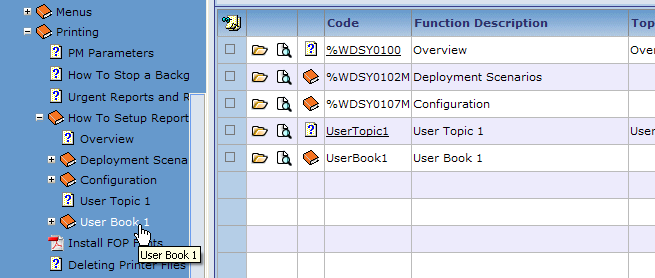
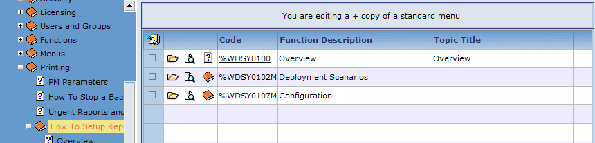
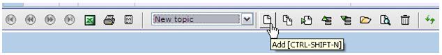
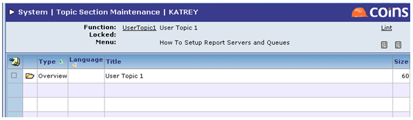
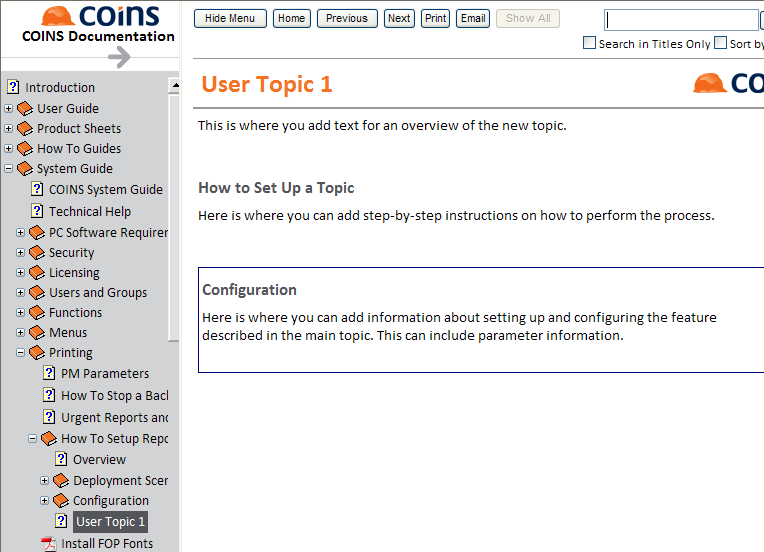

How to Add a User-defined Topic to a Plus Copy or User-defined Menu Book
- In the treeview, highlight the plus copy or user-defined menu book to which you want to add a user-defined topic; for example, highlight the plus copy of "How to Setup Report Servers and Queues" (see Figure 1) or the user-defined menu book "UserBook1" (see Figure 2).
Figure 1: Plus Copy Menu Book

Figure 2: User-Defined Menu Book (User Book 1)

NOTE
For the Plus Copy Menu Book only, the message "You are editing a + copy of a standard menu" appears at the top of the screen (see Figure 3).
Figure 3: Plus Copy Message

- Select New topic from the drop down menu at the bottom of the screen. Click Add
 (see Figure 4).
(see Figure 4).
Figure 4: Add New Topic

- When the next screen appears, enter a function name in the Code field; for example, enter UserTopic1 (see Figure 5).
NOTE
Do not begin the code with a + or % sign.
Figure 5: Code, Title and Menu Description fields

- Enter a Title and Menu Description for this new user-defined topic; for example, User Topic 1 (see Figure 5).
- Add text for the topic in the Body section (see Figure 5). This creates the "Overview" section of the topic, which is used as the main body of an explanatory topic or as an introduction to a process topic.
- Click Save
 to save the topic. You should now see your new user-defined topic on the menu list (see Figure 6).
to save the topic. You should now see your new user-defined topic on the menu list (see Figure 6).
Figure 6: New User-Defined Topic

- If you want to add other sections to the user-defined topic, click your new topic's link to open Topic Section Maintenance. Once opened, note that the Overview section has already been added (see Figure 7).
Figure 7: Topic Section Maintenance

- There are two optional topic sections you may need to add to your topic:
Process. Use this for step-by-step instructions.
Configuration. Use this for information about setting up and configuring the feature described in the main topic. This can include parameter information.
If you would like to add one or both of these sections to this user-defined topic, do the following:
- Click Add
Figure 8: Topic Section Maintenance - Add screen

- Select Configuration or Process in the Type field.
- Enter the Title you wish to use for the Configuration or Process section, such as Configuration or How to Set Up a Topic.
- Enter text for the section in the Body area.
- Click Save
- If you want to add whichever section you did not choose first, repeat Steps a through e. Otherwise, go to the next step.
- Click Undo
when you are finished adding the section(s).
- Click Next
 to return to the menu list. Note that the Process and/or Configuration sections are now added to the menu list (see Figure 9).
to return to the menu list. Note that the Process and/or Configuration sections are now added to the menu list (see Figure 9).
Figure 9: Updated Menu List

- Click Documentation
 at the bottom of the OA screen to go the OA Online Documentation Menu. You should see the user-defined topic you just created under the menu book; for example, "User Topic 1" (see Figure 10).
at the bottom of the OA screen to go the OA Online Documentation Menu. You should see the user-defined topic you just created under the menu book; for example, "User Topic 1" (see Figure 10).
Figure 10: New User-Defined Topic
